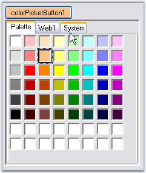

The Essential Tools ColorPickerButton allows .NET developers to provide a standard user interface similar to the Visual Studio .NET color picker dropdown, for selecting colors in Windows Forms applications. The ColorPickerButton displays the ColorUIControl as a drop-down in combination with a button. The .NET framework provides a color dialog control to allow applications to collect color information from users. However, the color dialog control does not provide any way to place a control within the layout of the application to collect color information. The Essential Tools ColorUIControl provides an easy to use color palette control that can be placed inline in your applications.

Figure 303: ColorPickerButton Control
See also
 Features
Features